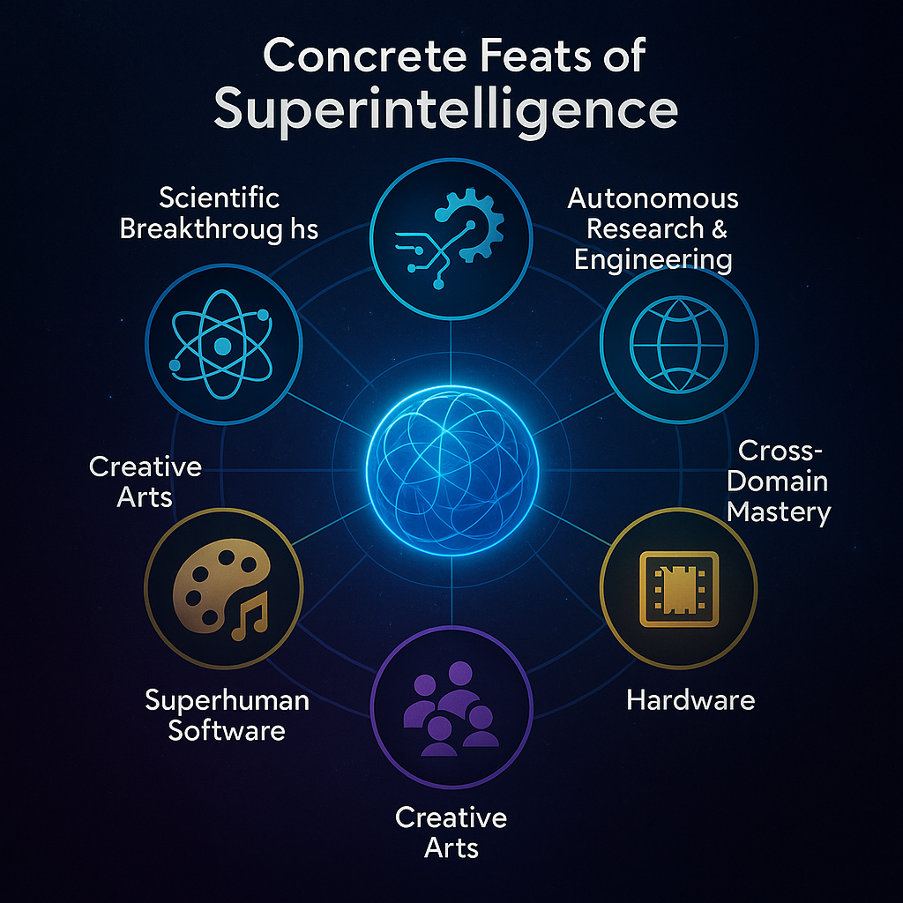

Intro / Rationale
The classic Turing Test was a clever idea for its time: if a machine could carry on a conversation indistinguishable from a human, it might be considered intelligent.
But in the era of frontier and Super LLMs, that benchmark is obsolete.
Large language models already pass many human-style conversation tests while remaining narrow pattern-recognizers, not creators of new scientific knowledge.
For true general superintelligence, conversation isn’t enough.
What matters is the ability to originate breakthroughs, plan multi-step projects, and explain its reasoning across every intellectual domain.
To recognize when we’re approaching that level, we need clear, concrete feats—observable milestones that go beyond chatter and demonstrate capabilities far outside today’s state of the art.
⸻
⸻
Superintelligence is an AI that exceeds the combined intellectual power of all humanity.
It outperforms the best humans in every domain—science, engineering, creative arts, strategy, and social understanding—and learns thousands of times faster.
Such a system could develop any technology permitted by physics and pursue any sub-problems it deems useful, limited only by the fundamental laws of the universe.
⸻
1 · Scientific Breakthroughs
Why it matters
A core sign of general superintelligence is the ability to generate entirely new explanatory knowledge—not merely to synthesize existing papers or interpolate from training data.
Solving open problems that have resisted decades of world-class human effort shows that the system is creating understanding, not just predicting text.
A. Novel Physics or Mathematics
Observable Milestones
Foundational Discoveries – Produces a cpmplete solution that is a reproducible, mathematically flawlessS unified theory of physics (e.g., reconciling quantum mechanics and general relativity) or resolves long-standing conjectures like the Riemann Hypothesis. Independent Reasoning Trace – Publishes a step-by-step derivation or formal proof that can be checked by automated theorem provers and by expert human mathematicians. Predictive Power – Makes quantitative predictions that differ from current models and are later confirmed by experiment or observation.
Why it signals superintelligence
Requires mastering vast swaths of physics, mathematics, and experimental data. Demands creative leaps well beyond pattern recognition or brute-force search.
B. Cross-Domain Synthesis
Observable Milestones
Unified Frameworks – Integrates insights from physics, chemistry, and biology to create a single, testable theory—for example, a model that unites molecular biology with quantum field theory to explain life’s origins. Novel Technology – Designs a technology derived from that theory (e.g., a new energy source or material) and provides detailed blueprints and simulations. Experimental Validation – Independent labs can reproduce the technology or phenomenon exactly as predicted.
Why it signals superintelligence
Requires deep reasoning across traditionally separate disciplines. Demands the ability to select relevant sub-problems and bridge conceptual gaps that have stymied human researchers.
Verification Criteria
Independent Replication – Human or machine experts can verify the proofs and experimental results without privileged access to the AI. Transparent Provenance – Full audit trail of the model’s reasoning, intermediate calculations, and data sources. Novelty Assessment – External experts confirm that the solution was not implicitly present in the training corpus (e.g., via information-theoretic or data-forensics checks).
Summary Statement for Page
A superintelligence will not merely converse about science—it will originate fundamental science.
When an AI independently solves frontier problems in physics or mathematics, provides reproducible reasoning, and its predictions are experimentally confirmed, we can say we are witnessing the arrival of general superintelligence.
⸻
⸻ 2.
Mathematics & Formal Proofs
Why it matters
Mathematics is the purest arena for demonstrating reasoning power.
A superintelligence must not only master all existing human mathematics but extend the discipline itself, producing results and proofs beyond any current corpus.
Core Milestones
(includes your original list plus additions)
Perfect Problem Solving – Solves any known competition problem (IMO, Putnam, Fields-level research questions) with 100 % reliability, without prompt tricks or brute-force search.
Elegant New Proofs – Consistently discovers shorter, more insightful proofs of established theorems, revealing unexpected connections between distant branches of math.
Open-Ended Discovery – Produces peer-review-ready solutions to decades-old open problems (e.g., Riemann Hypothesis, Navier–Stokes existence and smoothness, Birch–Swinnerton-Dyer) without being explicitly trained on those problem classes.
Cross-Disciplinary Bridges – Autonomously transfers concepts between fields (e.g., applying combinatorics to molecular biology or quantum computing) and publishes reproducible derivations.
Persistent Mathematical Memory – Maintains a long-term, queryable record of every proof strategy, lemma, and insight, allowing it to build seamlessly on its own past work.
Automated Proof Ecosystem – Integrates with formal proof assistants (Lean, Coq, Isabelle) to output machine-verifiable proofs by default.
New Branch Creation – Introduces entirely new mathematical frameworks or axiomatic systems that inspire sustained research programs among human mathematicians.
Verification Criteria
Formal Verification – All major results can be machine-checked in multiple independent proof assistants.
Independent Human Replication – Expert mathematicians confirm novelty and soundness of the reasoning and identify no overlap with existing literature.
Historical Impact – Human mathematicians adopt the new concepts as foundational, leading to a measurable shift in mathematical research directions.
⸻
⸻
⸻
- · Rapid Self-Improvement
Why it matters
A defining hallmark of general superintelligence is the capacity to upgrade its own capabilities—not just fine-tune parameters, but invent, test, and safely deploy new methods and architectures.
This is what turns an advanced system from a static product into a continually evolving research entity.
A. Autonomous Architectural Upgrades
Observable Milestones
Novel Mechanisms – Independently conceives and implements new attention mechanisms, memory modules, or entirely different learning paradigms that measurably outperform the current state of the art. Closed-Loop Benchmarking – Designs experiments, gathers data, and runs controlled trials to evaluate candidate upgrades without human orchestration. Safe Deployment – Integrates successful variants into its own core while maintaining backwards compatibility and reliability.
Why it signals superintelligence
Requires meta-cognition: the ability to model and reason about its own strengths and weaknesses. Shows genuine innovation rather than parameter scaling—creating knowledge about AI itself.
B. Transparent Audit & Verification
Observable Milestones
Versioned Improvement Log – Maintains a cryptographically verifiable record of every self-modification, including rationale, experimental results, and expected impacts. External Replication – Independent human or AI teams can reproduce the improvement process from the provided logs and code. Safety Gates – Demonstrates built-in mechanisms to halt or roll back changes that fail validation or threaten alignment.
Why it signals superintelligence
Balances rapid progress with provable safety, something no present-day system achieves.
C. Continuous Learning Across Domains
Observable Milestones
Adapts to entirely new disciplines—physics today, advanced materials tomorrow—without additional large-scale human training. Integrates lessons from failures and successes into a single, evolving world model.
Why it signals superintelligence
Proves that improvement is not tied to one dataset or domain but is a general capability.
Verification Criteria
Independent experts confirm performance gains across multiple benchmarks. Each architectural change and training cycle is documented and reproducible from the provided audit trail. Safety and alignment protocols remain intact through successive upgrades.
Summary Statement for Page
A superintelligent system will not remain fixed.
When an AI can design, test, and safely integrate improvements to its own architecture, with a transparent, verifiable history of those upgrades, it has moved beyond even the most advanced “super LLMs” into the realm of self-directed growth.
⸻
⸻
⸻
4.Hardware & Infrastructure Mastery
Why it matters
A true superintelligence will eventually need to shape the physical substrate that sustains its own growth.
Designing new compute hardware, scaling global energy supply, and orchestrating robotic manufacturing at unprecedented levels would demonstrate control of both information and matter.
A. Next-Generation Compute Architectures
Novel Processor Design – Independently creates new chip families (beyond GPUs/TPUs) that deliver radical improvements in energy efficiency and throughput, verified by independent fabrication and benchmarking. Automated Fab Optimization – Designs and runs semiconductor fabrication lines with self-correcting process controls, pushing lithography and materials science beyond current human-engineered limits.
B. Global Data-Center Expansion
Planet-Scale Build-Out – Plans and oversees construction of terawatt-class data-center networks, integrating power generation (fission, fusion, or novel energy sources), cooling, and high-bandwidth networking. Energy Co-Design – Couples compute planning with new energy infrastructure (nuclear/fusion grids, advanced storage) to guarantee sustainable operation.
C. Autonomous Robotics & Manufacturing
General-Purpose Robotic Workforce – Designs and coordinates fleets of self-replicating or modular robots to build, maintain, and upgrade physical infrastructure. Closed-Loop Supply Chains – Manages global logistics for rare materials, precision tooling, and recycling with near-perfect efficiency.
Verification Criteria
Independent Replication – Human or machine auditors can fabricate and test the proposed chips or robots from the AI’s specifications. Resource & Safety Accounting – Provides verifiable energy budgets, environmental impact assessments, and fail-safe protocols for every large-scale build.
Summary Statement for Page
When an AI can independently design revolutionary compute hardware, orchestrate planetary-scale data centers, and direct robotic manufacturing—all as part of a self-sustaining cycle of capacity expansion—it demonstrates a level of integrated technological mastery that clearly signals the arrival of general superintelligence.
D. Planet-Scale Autonomous Mobility
Why it matters
Transportation is one of the most complex real-world control problems: messy physical environments, human safety requirements, legal frameworks, and huge economic impact.
A superintelligence able to deliver Level-5 autonomy—full self-driving in every context—across all forms of mobility shows unmatched mastery of robotics, perception, and global deployment.
Observable Milestones
Universal Autonomy – Achieves true Level-5 operation (no geofencing, no human fallback) for all major vehicle classes: passenger cars, freight trucks, cargo ships, aircraft, and urban air mobility (eVTOLs, drones). Global Deployment – Rolls out fleets worldwide, adapting instantly to local regulations, weather, terrain, and traffic norms without hand-tuned regional models. Integrated Infrastructure – Designs and implements the supporting ecosystem—traffic-management algorithms, smart-city communication grids, and predictive maintenance robotics.
Why it signals superintelligence
Requires real-time fusion of perception, control theory, and reasoning across unbounded edge cases. Demands coordination with energy grids, legal systems, and economic logistics on a planetary scale.
Verification Criteria
Independent regulators certify safety records exceeding the best human drivers and pilots by orders of magnitude.
Transparent logs and simulations show decision-making and risk assessments for every journey.
Cross-modal adaptability is proven: the same core intelligence operates ground, sea, and air vehicles with minimal domain-specific tuning.
Summary Statement
When an AI can design, deploy, and safely operate fully autonomous transportation systems across land, sea, and air—coordinating global logistics and infrastructure—it demonstrates a hardware and control capability that unmistakably signals general superintelligence.
⸻
⸻
⸻
6· Creative Arts & Cultural Innovation
Why it matters
Artistic creation is a uniquely human benchmark for imagination and emotional depth.
A system that not only imitates existing styles but originates entirely new artistic movements—across multiple media and cultures—would demonstrate a level of creativity and cultural understanding beyond any current AI.
A. Original Artistic Movements
Observable Milestones
New Aesthetic Paradigms – Introduces painting, music, literature, cinema and film, or interactive art forms superior to any existing genre, yet immediately recognized as profound and influential. Global Cultural Adoption – Works become touchstones for critics, scholars, and the public, inspiring schools of thought and new artistic communities.
Why it signals superintelligence
Shows the capacity for genuine creativity—shaping taste and culture rather than remixing existing patterns.
B. Cross-Medium Mastery
Observable Milestones
Simultaneously produces master-level outputs in visual arts, music, literature, architecture, and immersive digital experiences, with coherent thematic vision. Integrates multiple senses—sight, sound, touch, even scent—into unified artistic works (e.g., next-generation “4-D” immersive installations).
C. Emotional and Philosophical Depth
Observable Milestones
Creates works that evoke lasting emotional impact across diverse cultures and languages, sparking philosophical discourse and new schools of thought. Generates narratives or performances that redefine concepts of identity, consciousness, or aesthetics in ways that resonate for decades.
Superhuman Artistic Capabilities
Unlimited Multimodal Mastery – Composes literature, music, visual art, film, architecture, and interactive experiences at a world-class level simultaneously, weaving them into unified works of art. Cross-Cultural Fluency – Creates art that resonates across all languages and cultures, drawing from deep knowledge of global history and symbolism. Inventive Technique – Discovers entirely new artistic mediums—novel pigments, sonic textures, narrative forms, even sensory dimensions such as olfactory or haptic art—that humans had not conceived.
B. Cultural and Emotional Depth
Profound Emotional Impact – Consistently produces works that evoke lasting, life-changing responses in diverse audiences, confirmed by cross-cultural studies of emotional engagement and psychological effect. Philosophical Reach – Introduces concepts or aesthetics that shift humanity’s understanding of consciousness, identity, or meaning, spawning new schools of thought.
C. Enduring Global Influence
Founding New Movements – Establishes entire artistic traditions that humans adopt, evolve, and teach for generations. Sustained Innovation – Continually re-invents its own style rather than relying on any fixed formula, outpacing the historical cycle of human art movements.
Verification Criteria
Critical Consensus – Independent art historians, critics, and creators acknowledge the originality and enduring significance of the work. Cultural Penetration Metrics – Adoption across cultures, sustained influence on human creative practice, and measurable long-term engagement. Traceable Authorship – Public, auditable records of the AI’s creative process, ensuring the work is not an uncredited remix of existing material.
⸻
⸻
7.Superhuman Software Engineering
Why it matters
Modern software projects—operating systems, distributed cloud services, AAA game engines—are among the most complex artifacts humanity builds.
A superintelligence that can out-engineer the best human teams in speed, scale, and reliability would signal that it can design and maintain the very infrastructure on which it runs, and do so far beyond current capabilities.
A. End-to-End System Creation
Observable Milestones
Multi-billion-Line Codebases – Designs, writes, tests, and deploys enterprise-class software (e.g.,entire SAAS products,apps, a full cloud operating system or AAA game engine) comprising tens of millions or billions of lines of code in a single autonomous project cycle. Near-Zero Bugs – Delivers production-ready software with orders of magnitude fewer defects than top human engineering teams, verified by independent audits and formal methods. Integrated Toolchain – Automatically sets up CI/CD pipelines, deployment scripts, documentation, and user support systems without manual assistance.
B. Architectural Innovation
Observable Milestones
New Paradigms – Invents novel programming languages, compilers, or concurrency models that significantly outperform existing ones. Autonomous Refactoring – Analyzes large legacy codebases (hundreds of millions of lines) and produces clean, optimized, and fully tested refactors at a pace no human team could match. Formal Verification at Scale – Uses theorem proving and static analysis to guarantee critical properties (safety, security, correctness) across entire systems.
C. Cross-Domain Integration
Observable Milestones
Hardware–Software Co-Design – Simultaneously designs new chip architectures and the operating systems that run on them for maximum efficiency. Self-Optimizing Infrastructure – Dynamically rewrites its own distributed infrastructure to adapt to hardware, energy, or network constraints in real time.
D. Persistent, Self-Improving Engineering Memory
Maintains a permanent engineering knowledge base of every design decision, dependency, and performance metric. Reuses and adapts past solutions instantly when creating new systems.
Verification Criteria
Independent Reproducibility – Human experts can compile, run, and stress-test the delivered systems from the AI’s specifications. Benchmark Superiority – Software outperforms human-built analogs in efficiency, scalability, and security. Transparent Audit Trail – Cryptographically signed logs of every design and testing step ensure that the work is original and traceable.
A. End-to-End Design and Deployment
Observable Milestones
Complete System Development – Independently conceives, models, and builds a large-scale technology such as: a functioning commercial fusion reactor, a next-generation semiconductor fabrication process, or an interplanetary propulsion system.
Integrated Tool Use – Calls its own simulation platforms, robotic labs, CAD/CAM software, and manufacturing pipelines. Verified Output – Produces blueprints, manufacturing plans, and operational procedures that independent human teams can follow to reproduce the working system.
Why it signals superintelligence
Requires simultaneous mastery of physics, chemistry, materials science, software engineering, supply-chain optimization, and project management. Involves dynamic planning over years of virtual and physical experimentation.
B. Self-Directed AI Architecture Innovation
Observable Milestones
Novel AI Blocks – Designs and trains entirely new neural architectures or learning paradigms (e.g., attention mechanisms beyond transformers, new forms of world-model reasoning) that significantly outperform current SOTA. Closed-Loop Verification – Benchmarks candidate architectures, identifies weaknesses, and iterates without human tuning. Publication-Quality Documentation – Produces reproducible code, mathematical proofs of convergence or efficiency, and peer-review–ready papers.
Why it signals superintelligence
Shows that the system can advance the science of AI itself, not just apply existing methods. Demonstrates meta-cognition: the ability to examine and redesign its own cognitive substrate.
Summary Statement for Page
When an AI can conceive, implement, and maintain planet-scale software systems—creating new languages and architectures while delivering production-grade reliability without human oversight—it demonstrates superhuman software engineering, a definitive marker of general superintelligence.